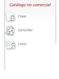
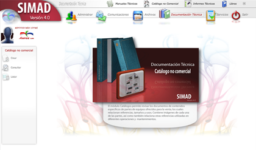
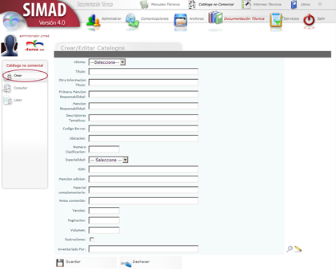
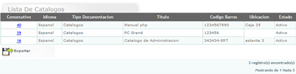
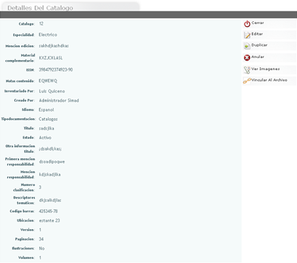
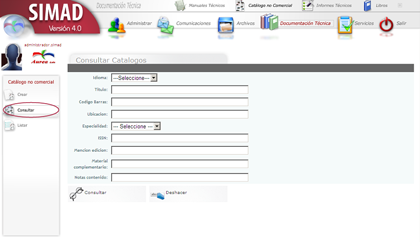
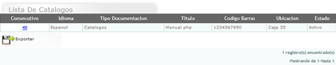
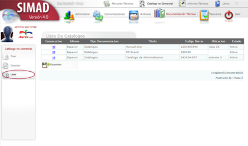

Menú lateral  |
| Seleccione la opción sobre la que necesita ayuda |
| Crear |
| Consultar |
| Listar |
| Detalle Documentación |
| Documentación Técnica Catálogo no Comercial |

El módulo Catálogos permite revisar los documentos de contenidos específicos de partes de equipos ofrecidos para la venta, los cuales relacionan referencias, tamaños y usos. Contiene imágenes de cada una de las partes, así como también relaciona otras referencias utilizadas en diferentes operaciones y mantenimientos.
Para ingresar a la herramienta Catálogo no Comercial, realice los siguientes pasos:
- Haga clic en el icono Documentación Técnica.
- Haga clic en el icono Catálogo no Comercial en la parte superior central.
Opciones de Catálogo no Comercial
- Desplácese al menú lateral y elija la opción deseada.
Permite a los usuarios de SIMAD 4.0, crear información acerca de los Catálogos no comerciales que posee la organización.

Para crear una un Catálogo no Comercial en el sistema SIMAD, realice los siguientes pasos:
- Haga clic en el menú lateral, icono Crear.
- Haga clic en idioma y seleccione una opción.
- Digite el Título.
- Digite información adicional al Título.
- Digite la primera Mención de Responsabilidad.
- Digite la Mención de Responsabilidad.
- Digite Descriptores Temáticos.
- Digite el Código de Barras.
- Digite la ubicación en que se encontrará el catálogo.
- Digite el Número de clasificación.
- Haga clic en Especialidad y seleccione una opción.
- Digite el número ISSN.
- Digite la Mención de edición.
- Digite el material complementario.
- Escriba las notas del contenido.
- Digite la versión del catálogo.
- Digite el número de páginación.
- Digite el volumen del catálogo.
- Haga clic en Ilustraciones si el catálogo las posee.
- Haga clic en Guardar.

- Al guardar el sistema mostrará el listado de los Catálogos creados.
- Si desea imprimir la lista de los Catálogos que están creados haga clic en exportar.
- Para ver el detalle de un Catálogo creado haga clic en el número consecutivo.
Detalle Catálogo no Comercial, Crear
Haga clic en cualquiera de las diferentes opciones.

- Para conocer todas las opciones del detalle de la documentación remítase a Detalle de Documentación Técnica.
Permite consultar los Catálogos no comerciales creados en el sistema SIMAD 4.0.

Para consultar un Catálogo creado en en el sistema SIMAD, realice alguno de los siguientes pasos:
- Haga clic en el menú lateral, icono Consultar.
- Haga clic en Idioma y seleccione una opción.
- Digite el Título del catálogo.
- Digite el código de barras.
- Digite la ubicación en que se encuentra el catálogo.
- Haga clic en Especialidad y seleccione una opción.
- Digite el número ISSN.
- Digite la Mención de Edición.
- Digite material complementario que posee el catálogo.
- Digite las Notas contenido del catálogo.
- Haga clic en el icono de Consultar.

- Si desea borrar los datos digitados haga clic en deshacer para escribir nuevos datos.
- Si desea imprimir la lista de catálogos que están creados, haga clic en exportar.
- Haga clic en el número consecutivo del catalogo para ver los detalles de este.
Detalle Catálogo no Comercial, Consultar
Haga clic en cualquiera de las diferentes opciones.
- Para conocer todas las opciones del detalle de la documentación remítase a Detalle de Documentación Técnica.
Permite ver el listado de los Catálogos no comerciales que se encuentran en creados en el sistema SIMAD 4.0.

Para ver e listado de Catalogos no comerciales creados en el sistema, realice los siguientes pasos:
- Haga clic en el menú lateral, icono Listar.
- Si desea imprimir la lista de catálogos que están creados haga clic en exportar.
- Haga clic en el número consecutivo del catálogo para ver los detalles de este.
Detalle Catálogo no Comercial, Listar
Haga clic en cualquiera de las diferentes opciones.
- Para conocer todas las opciones del detalle de la documentación remítase a Detalle de Documentación Técnica.